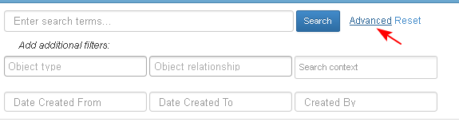
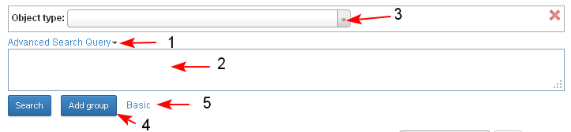
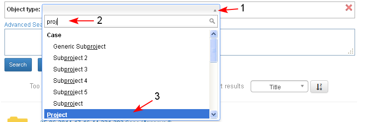
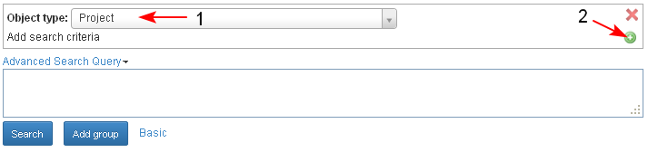
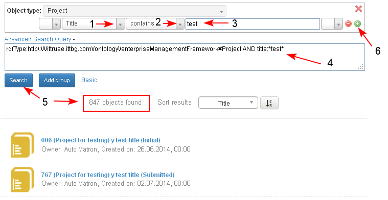
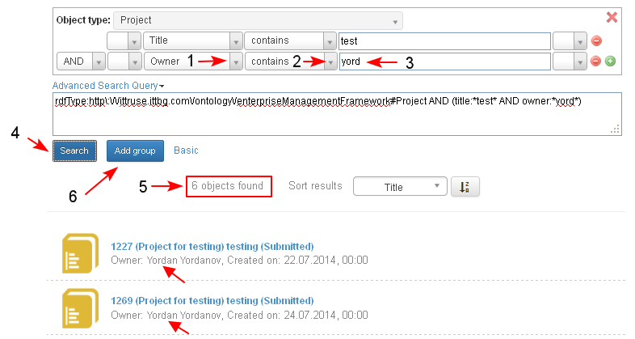
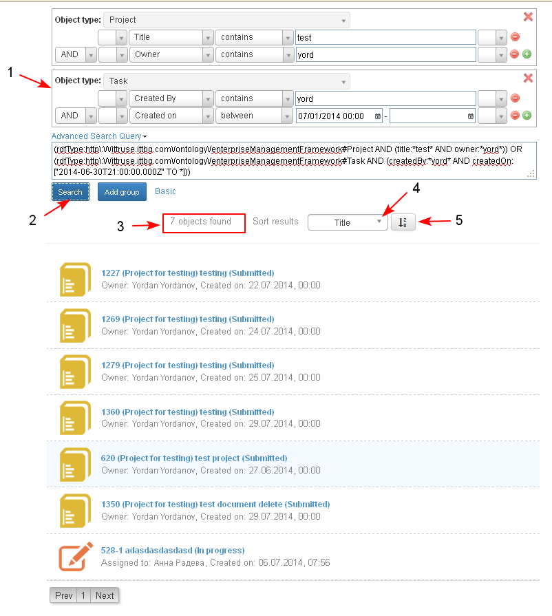
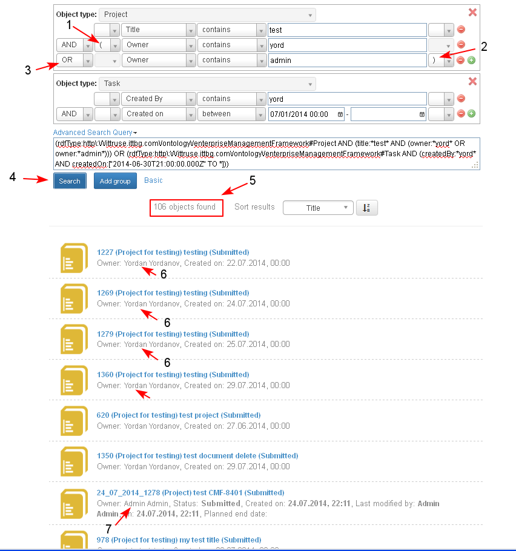

Access the Advanced Search Form
- The user accesses the Advanced Search from the link in the Basic Search form.

- When the link is selected, the Advanced Search page is opens with only one section added in which the user defines the first object type in the query, selectable from the drop down list (3). The list contains all object types in the system.
- Each section has only one criteria "Object Type" and may represent all object types or only one object type.
- The user may expand the "Advanced Search Query" field (1) in order to review and control the entered query string which automatically appears (2) when new values are added in the form.
- The user may add another section in the form clicking the button "Add group"(4).
- The user may go to the Basic Search form clicking "Basic" (5).

Select Object Type and Add Search Criteria
- The user selects the "Object type" from the the list (1). The list appears also as an auto suggest when the user starts entering text in the field (2-3).
- All objects and all their properties can be listed so that the user can define the search criteria amongst all existing and used properties and objects.
- Selections from lists are from to more than one value

- When the object type is selected (1) a new row opens for adding search criteria (properties) which exist in the system for the selected object type.
- The user clicks the button "+" (2).

- A new empty row for selecting properties from lists appear:
- The user may select properties only relevant to selected object type (1-2-3).
- In the "Advanced Search Query" field automatically appears the query string (4).
- The user may select properties only relevant to selected object type (1-2-3).
- The user clicks the button "Search" and the results appear in a table view (5). The results correspond to the entered search criteria.
- The user decides to narrow the search by adding new search criteria clicking the button "+" (6).

- A new row for selecting properties for the selected object type appears.
- The relation between the two criteria is AND.
- The user selects criteria, defines its value (1-2-3) and clicks "Search" (4)
- All objects of the selected type (here - "Project") and selected properties (here -"Title" and "Owner") with correspondent values (here - "*test*" and "*yord*") are displayed (5) in the table.

Add Another Section
- The user decides to expand the search with another object type and clicks the button "Add group" (6) (in the picture shown above).
- New empty section is added (1) in the form where:
- The relation between the sections is OR
- The user selects the object type (here - "Task").
- two or more section may have same value for "Object Type"
- The user defines the properties for the selected type and its values
- The user clicks "Search" (2)
- The founded results are only for "Project" or "Task" (3), which correspond to the selected properties and values, entered in the form.
- The results may be sorted by different criteria selectable from list (4), ascending or descending (5).

Combine Search Criteria with Brackets, AND and OR
- The user has the option to use brackets () in the advanced search form and group his/ her search criteria.
- The brackets refer only within the section (1-2).
- The user may group already grouped groups. The drop down list for brackets is with up to 3 brackets (opening/ closing).
- The user is notified if there are missing brackets.
- The user has the option to combine search criteria in the advanced search form with AND relation.
- The user has the option to combine search cirteria in the advanced search form with OR relation (3).
The founded results (4-5) correspond to the selected object type, properties and entered values.
